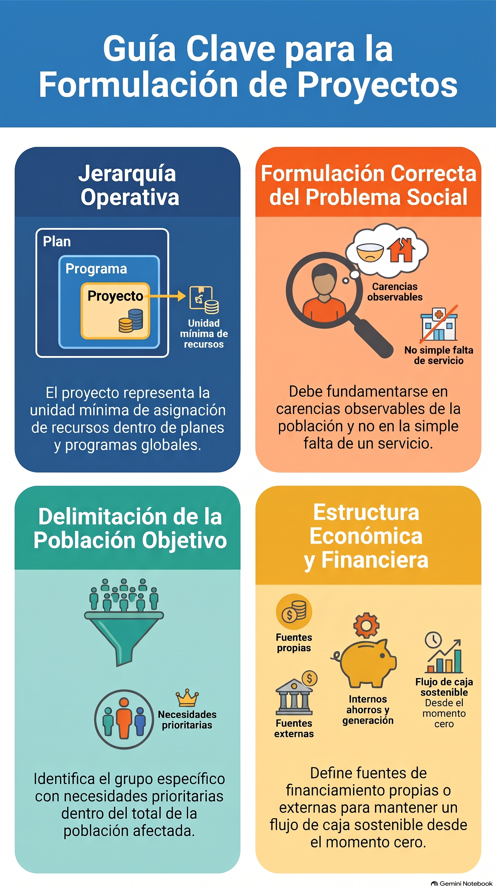

Fundamentos y Ciclo de Vida del Proyecto
Naturaleza de los proyectos, restricciones operativas y secuencia cronológica de maduración.
Proyecto Empresarial / Financiero
Se fundamenta estrictamente en la existencia de una demanda con capacidad de pago efectiva, dispuesta a abonar el precio de venta para obtener lucro o utilidades económicas para inversionistas privados.
Proyecto Social / Público
Responde a necesidades insatisfechas de la población por razones éticas, políticas o sociales. Promovido por el Estado o agencias de cooperación para el bienestar colectivo, sin exigir obligatoriamente capacidad de pago a los beneficiarios.
Las 4 Fases Integrales del Ciclo de Vida
Fase de Preinversión
Análisis y formulación antes de inmovilizar capital. Se divide en 4 niveles:
- Idea: Identificación preliminar de oportunidad o problema.
- Perfil: Estimación global de costos y beneficios probables.
- Prefactibilidad: Datos vigentes asumidos como constantes a futuro.
- Factibilidad: Diseños de ingeniería finales y contratos demostrados.
Fase de Inversión
Materialización física y financiera del proyecto.
- Adquisición de terrenos y obras civiles.
- Montaje de maquinarias, instalaciones y equipos.
- Capacitación de operarios y pruebas preliminares.
Fase de Operación
Puesta en marcha regular durante la vida útil proyectada.
- Fabricación continua de bienes o prestación del servicio.
- Generación sostenida de ingresos operativos de explotación.
- Administración periódica de costos y capital de trabajo.
Fase de Evaluación
Control de gestión y comparación ex-post.
- Cotejo de resultados reales vs. proyecciones financieras.
- Adopción de medidas correctivas operativas inmediatas.
- Decisión sobre ampliación, modernización o cierre.
Herramienta de Planificación: Diagrama de Gantt
Software oficial: GanttProject y Trello (gestión colaborativa de flujos de trabajo).
Estudio de Mercado: Los Cinco Submercados
El mercado como primer filtro de viabilidad. Haz clic en cada submercado para revelar su impacto operativo y comercial.
Estructura Sociodemográfica (Clase 5)
La pirámide de población dicta la demanda potencial presente y futura. La PEA abarca ampliamente de 15 a 64 años y las MEF de 15 a 49 años. El tramo de 15 a 49 años representa la intersección o solapamiento crítico donde coincide la fuerza de trabajo activa con el público clave de reproducción y consumo familiar.
Estrategias Competitivas (Michael Porter)
- Liderazgo en Costos: Precios bajos sustentados en economías de escala y alta eficiencia operativa.
- Diferenciación: Cualidades únicas percibidas por el cliente (marca, calidad superior, servicio) para cobrar un sobreprecio.
- Enfoque o Nicho: Concentración en un segmento específico o región desatendida.
Estudio Técnico, Ingeniería y Marco Legal
Cómo producir físicamente el bien o servicio, dónde ubicarse y categorización oficial de empresas en Paraguay.
Las 5 Preguntas Básicas que Resuelve el Estudio Técnico
Simulador Metodológico: Ponderación de Factores de Localización
Asigna notas del 1 al 10 para evaluar objetivamente dos alternativas de localización física.
| Factor Crítico | Peso (%) | Nota Opción A (Asunción) | Nota Opción B (Villeta) |
|---|---|---|---|
| Cercanía a Fuentes de Materia Prima | 30% | ||
| Acceso a Mercado Consumidor | 25% | ||
| Disponibilidad de Mano de Obra Calificada | 25% | ||
| Costos de Terreno y Régimen Impositivo | 20% | ||
| Puntaje Ponderado Final: | 7.05 | 8.25 |
Clasificación Oficial de MIPYMES en Paraguay (Decreto Nº 4535 / Ley 7444)
| Categoría MIPYME | Personal Ocupado | Facturación Anual Vigente (Decreto Nº 4535) ⭐ | Antiguo Decreto 3698/20 | Base Ley 4457/12 |
|---|---|---|---|---|
| Microempresa (MIE) | Hasta 10 trabajadores (incluye familiares) | Hasta ₲ 1.000.000.000 | ₲ 646.045.491 | ₲ 500.000.000 |
| Pequeña Empresa (PE) ⭐ | De 11 a 30 trabajadores | Hasta ₲ 5.000.000.000 | ₲ 3.230.227.453 | ₲ 2.500.000.000 |
| Mediana Empresa (ME) | De 31 a 50 trabajadores | Hasta ₲ 10.000.000.000 | ₲ 7.752.545.886 | ₲ 6.000.000.000 |
El Decreto Nº 4535 (reglamentario de la Ley Nº 7444) actualizó formalmente los montos máximos de facturación bruta anual: Microempresa: hasta 1.000 millones, Pequeña Empresa: hasta 5.000 millones y Mediana Empresa: hasta 10.000 millones de Guaraníes. En caso de discrepancia en trabajadores, prevalece siempre la facturación declarada ante la DNIT (Art. 6º).
Articulación Jerárquica Social (Clase 7)
Estudio Financiero: Flujo de Caja, VAN y TIR
Cuantificación monetaria, matemática del valor tiempo del dinero y reglas de decisión.
Valor Actual Neto (VAN)
Representa el valor presente equivalente de los flujos netos proyectados descontados a la tasa mínima de costo de capital (k), deduciendo la inversión inicial.
Tasa Interna de Retorno (TIR)
Es la tasa de actualización que equilibra exactamente el Beneficio Neto Actualizado (BNA) con la inversión inicial, anulando el VAN.
Simulador de Rentabilidad: Ejercicio Oficial de Examen
Modifica la Inversión, la Tasa de Descuento (k) o los Flujos para ver el recálculo y la gráfica al instante.
Infografía Oficial Generada en NotebookLM
Esquema visual panorámico con los conceptos axiales de la materia.


Tarjetas de Memoria Rápida (Flashcards 3D)
Haz clic sobre la tarjeta para girarla y revelar la respuesta oficial de la cátedra.
¿Cuál es la diferencia fundamental entre un Proyecto Privado y un Proyecto Social?
Simulacro de Examen (10 Preguntas Tipo Test)
Pon a prueba tu dominio antes de rendir con preguntas rigurosas extraídas de las 6 clases.
Guía de Estudio Maestro (Texto Completo)
El informe analítico completo de NotebookLM con sus 10 secciones y glosario exhaustivo.
Guía de Estudio Maestro: Elaboración y Evaluación de Proyectos (Clases 3 a 10)
Introducción y Orientación al Aprendizaje
La preparación integral para una evaluación en la cátedra de Elaboración y Evaluación de Proyectos exige comprender la disciplina como un sistema secuencial, donde cada fase y estudio condiciona directamente a los siguientes. Un proyecto no representa un esfuerzo aislado ni una simple idea de negocio; constituye una unidad estructurada de asignación de recursos diseñada para resolver una carencia, transformar una parcela de la realidad económica y social, o explotar una oportunidad de mercado identificada empíricamente.
Este material organiza de manera rigurosa los núcleos temáticos abordados a lo largo del curso, estructurándose en cuatro bloques fundamentales: la conceptualización y planificación del ciclo de vida (Clase 3); el análisis profundo de la demanda, la oferta y las variables sociodemográficas en el Estudio de Mercado (Clases 4 y 5); la ingeniería, localización y organización operativa en el Estudio Técnico junto a la clasificación empresarial y el marco social (Clases 6 y 7); y la cuantificación monetaria mediante el Flujo de Caja y la evaluación de rentabilidad a través del Valor Actual Neto y la Tasa Interna de Retorno en el Estudio Económico y Financiero (Clase 10).
Al finalizar el recorrido de esta guía, el estudiante dominará tanto los fundamentos teóricos como las matrices metodológicas y operativas exigidas para formular, justificar y evaluar proyectos de inversión con solvencia académica y profesional.
1. Fundamentos y Ciclo de Vida del Proyecto de Inversión (Clase 3)
Concepto, Restricciones y Carácter del Proyecto
Un proyecto de inversión se define como una unidad de acción orientada a alcanzar un objetivo específico y medible que guía todas las actividades involucradas. Operativamente, todo proyecto se desenvuelve bajo restricciones críticas de tres órdenes: temporales (un plazo definido de inicio y fin), presupuestarias (recursos financieros limitados) y humanas (dotación de personal calificado).
De acuerdo con el rol que cumple y el origen de la toma de decisiones, los proyectos se categorizan en dos grandes vertientes:
- Proyecto Empresarial o Privado-Financiero: Su ejecución se fundamenta estrictamente en la existencia de una demanda con capacidad de pago efectiva, dispuesta a abonar el precio fijado para el bien o servicio. El fin rector de esta iniciativa es la obtención de rentabilidad económica y utilidades para los inversionistas privados.
- Proyecto Social o Público: Su decisión final se adopta a partir de las necesidades insatisfechas de determinados grupos poblacionales, procurando su satisfacción por razones políticas, económicas, sociales o morales. El propósito central no radica en el lucro financiero, sino en el bienestar colectivo, siendo impulsado por el Estado o por organismos internacionales sin exigir obligatoriamente capacidad de pago a los beneficiarios.
El Ciclo Integral de Vida de un Proyecto
El avance metódico de un proyecto transcurre a través de cuatro fases consecutivas e interdependientes:
- Fase de Preinversión: Corresponde a la etapa de formulación analítica donde se evalúa la conveniencia de asignar recursos antes de inmovilizar capital. Se divide internamente en cuatro niveles sucesivos de maduración:
- Idea: Identificación preliminar de una oportunidad de negocio, problema o necesidad colectiva.
- Perfil del Proyecto: Incorporación de ideas básicas, estimaciones globales de costos y beneficios, culminando en una conclusión "en principio" sobre la viabilidad de proseguir con los estudios.
- Estudio de Prefactibilidad: Análisis que profundiza en alternativas técnicas y comerciales utilizando información cuantitativa y antecedentes existentes, considerando los datos actuales como constantes para proyecciones iniciales.
- Estudio Definitivo o Factibilidad: Evaluación rigurosa basada en información primaria demostrada, diseños de ingeniería finales y contratos preliminares que fundamentan la decisión final de inversión.
- Fase de Inversión (o Ejecución): Materialización física y financiera del proyecto mediante la adquisición de activos fijos, contratación de obras, montaje de infraestructura y capacitación del personal operativo.
- Fase de Operación: Puesta en marcha regular donde los recursos productivos se articulan para elaborar los bienes o prestar los servicios de forma continua durante la vida útil proyectada.
- Fase de Evaluación: Instancia de control de gestión destinada a cotejar los resultados reales obtenidos con las proyecciones iniciales del flujo de fondos, permitiendo aplicar ajustes y medidas correctivas que garanticen la rentabilidad y sostenibilidad del emprendimiento.
Planificación y Herramientas Operativas
La planificación constituye la acción sistemática de decidir con anticipación qué hacer, cómo hacerlo, cuándo y quién debe ejecutar cada tarea. Su propósito central es reducir la incertidumbre, mitigar el impacto de los cambios del entorno, evitar la duplicación o superposición de actividades, brindar orientación directiva y asegurar el éxito futuro.
Dentro de este marco, el Diagrama de Gantt es la herramienta gráfica fundamental para la gestión temporal de proyectos. Representa el trabajo previsto a lo largo de un período determinado, permitiendo visualizar la fecha de inicio y finalización de cada tarea, la asignación de responsables, las dependencias lógicas entre actividades y los hitos clave. Para su implementación digital, la cátedra destaca soluciones especializadas como GanttProject y plataformas de gestión colaborativa de flujos de trabajo como Trello.
Asimismo, para la nomenclatura oficial y formulación estructurada de iniciativas, se enfatiza el empleo de verbos de acción correspondientes a procesos específicos (como Sistematización, Reestructuración, Recuperación, Saneamiento, Sustitución o Renovación) y estudios básicos (Diagnóstico, Inventario, Censo o Catastro), en concordancia con marcos normativos de transparencia como la Ley Nº 5282/14 de Libre Acceso Ciudadano a la Información Pública.
2. Estudio de Mercado: Dinámica Económica y los Cinco Submercados (Clase 4)
El Mercado como Primer Filtro de Viabilidad
El estudio de mercado constituye el primer filtro indispensable para evaluar cualquier iniciativa productiva. Su cometido esencial es revelar las necesidades insatisfechas, dimensionar el potencial de la demanda y verificar la capacidad operativa de satisfacerla. Económicamente, el mercado se concibe como el espacio donde confluyen compradores y vendedores para transar bienes o servicios, articulando variables de tiempo, lugar, oferta, demanda y precio.
Interacción entre Demanda, Oferta y Formación de Precios
El análisis microeconómico del proyecto descansa sobre el equilibrio dinámico de sus fuerzas constitutivas:
- La Demanda: Expresa la cantidad de bienes o servicios que los consumidores desean y pueden adquirir a diferentes niveles de precios. La disposición de compra está fuertemente condicionada por la previa satisfacción de las necesidades básicas insatisfechas (NBI: alimentación, salud, vestimenta y vivienda). Una vez cubiertas estas prioridades esenciales, el ingreso residual se canaliza hacia bienes de carácter secundario o discrecional.
- La Oferta: Representa el volumen de bienes que los productores colocan a disposición del mercado a un precio determinado. Su comportamiento responde a las expectativas económicas, los costos de producción fabril, el nivel tecnológico adoptado y el grado de competencia sectorial. Según las particularidades del bien, la empresa actúa como creadora de precio (si posee un producto diferenciado o ventaja monopólica) o como tomadora de precio (si el bien es genérico o compite en mercados perfectamente concurridos).
- Precio y Cantidad de Equilibrio: El precio refleja la valoración acordada entre oferentes y demandantes para despojarse y apropiarse del bien, respectivamente. El punto de equilibrio determina la cantidad exacta que el mercado absorberá; cualquier producción por encima de dicha cifra satura el mercado y erosiona los precios.
Los Cinco Submercados del Proyecto
Al entrar en operación un proyecto, interactúa simultáneamente con cinco submercados cuya comprensión integral define el modelo de negocio:
| Submercado | Incidencia Directa en el Proyecto | Aspectos Clave a Evaluar |
|---|---|---|
| Proveedor | Incide directamente en la estructura de costos y abastecimiento continuo. | Precios de insumos, plazos de entrega, condiciones de pago, calidad, asistencia técnica y repuestos de maquinarias. |
| Competidor | Condiciona la estrategia de vinculación entre el producto y los consumidores. | Puntos fuertes (para respetarlos e imitarlos) y débiles o "talón de Aquiles" (para capturar clientela), políticas de crédito, apariencia y métodos de venta. |
| Distribuidor | Dictamina los requisitos logísticos y el alcance territorial de la cobertura. | Costos de intermediación, transporte, capacidad de almacenamiento y penetración de canales comerciales. |
| Consumidor | Determina el nivel de aceptación, penetración y volumen total de ingresos. | Hábitos de compra, motivos de elección, perfiles de clientes corporativos (B2B) versus consumidor final masivo (B2C). |
| Externo | Introduce variables macroeconómicas y tecnológicas ajenas al control directo. | Integración comunicacional global, tipo de cambio, comercio digital, políticas aduaneras y competitividad internacional. |
Estrategias Competitivas
Para capturar valor en mercados disputados, el estudio de mercado distingue dos estrategias genéricas:
- Diferenciación: Se aplica en mercados maduros donde la oferta tecnológica es homogénea entre rivales. Consiste en dotar al producto o servicio de atributos distintivos apreciados por el consumidor (calidad superior, diseño, atención, asesoramiento especializado), logrando que perciba un valor superior y justifique un precio premium.
- Enfoque (o Alta Especialización): Radica en identificar y atender un nicho o porción desatendida del mercado, apostando a la innovación y a la satisfacción exacta de necesidades específicas antes que a las economías de escala masivas.
3. Demografía, Perfil del Consumidor y Viabilidad Comercial (Clase 5)
La Estructura Sociodemográfica como Predictor del Mercado
El comportamiento del consumidor no opera en el vacío; está condicionado por la matriz sociodemográfica del área de influencia. Un estudio de mercado profesional debe fundamentar sus proyecciones sobre herramientas demográficas precisas, destacándose la Pirámide de Población como instrumento visual y operativo para analizar la composición por sexo y rangos etarios.
El análisis etario establece segmentaciones estructurales con implicancias económicas directas:
- Población Joven (< 15 años): Genera patrones de consumo dependientes y demanda en rubros escolares, recreativos y de salud pediátrica.
- Población Adulta (15 a 64 años): Constituye el núcleo productivo y reproductivo. Alberga a la Población Económicamente Activa (PEA), responsable de generar ingresos y participar del mercado laboral, así como a las Mujeres en Edad Fértil (MEF), factor determinante en las tasas de natalidad y fecundidad que definen el crecimiento vegetativo futuro del mercado.
- Población Envejecida (> 65 años): Orienta la demanda hacia servicios médicos especializados, cuidados asistenciales, esparcimiento pasivo y regímenes previsionales.
Indicadores de Pobreza y Nivel Socioeconómico
La capacidad adquisitiva de la demanda se vincula estrictamente con el nivel de ingresos y la ocupación laboral. En contextos de formulación de proyectos, la medición de las Necesidades Básicas Insatisfechas (NBI) es un indicador esencial: se cataloga en esta condición a los hogares que presentan al menos una carencia crítica en calidad de vivienda, hacinamiento, acceso a servicios sanitarios básicos o asistencia escolar. Mientras que el proyecto privado analiza el NBI para dimensionar el ingreso disponible residual, el proyecto social se enfoca en estas brechas para estimar la población carenciada prioritaria.
Atributos Comerciales y Comercio Electrónico
La competitividad del bien trasciende su funcionalidad técnica intrínseca. El aspecto exterior del producto influye decisivamente en el acto de compra: * En bienes físicos, exige un cuidado riguroso del empaque, presentación e imagen. * En servicios, la ventaja competitiva descansa en la pulcritud operativa y la excelencia en el trato directo. * En obras públicas, se refleja en la ornamentación, integración paisajística y obras complementarias de seguridad y comodidad.
Asimismo, la transformación digital y el comercio electrónico (e-commerce) han reconfigurado los canales de comercialización. En Paraguay, los datos institucionales (como los registros de Bancard durante la aceleración del comercio electrónico) evidenciaron incrementos interanuales masivos en transacciones (+93%) y volumen de facturación (+72%), con crecimientos exponenciales en sectores estratégicos como farmacias (+644%), electrodomésticos (+210%) y supermercados (+172%), contrastando con caídas drásticas en aerolíneas (-43%).
El Dictamen del Estudio de Mercado
Las conclusiones del estudio de mercado deben sintetizar de forma categórica: los aspectos favorables y desfavorables, los riesgos comerciales latentes, la magnitud del mercado potencial y, finalmente, emitir una decisión operativa fundada: seguir o no seguir con el proyecto (Go / No-Go).
4. Estudio Técnico: Operatividad, Localización y Diseño de Procesos (Clase 6)
Objeto y Alcance del Estudio Técnico
Una vez comprobada la existencia de mercado suficiente, el Estudio Técnico se encarga de determinar la factibilidad operativa y física del emprendimiento. Su propósito fundamental es responder a cinco interrogantes esenciales:
Interrogantes del Estudio Técnico: * ¿Dónde producir? (Localización física del proyecto). * ¿Cuánto producir? (Tamaño y capacidad instalada de planta o servicio). * ¿Cuándo producir? (Secuencia temporal y cronograma operativo). * ¿Cómo producir? (Ingeniería de procesos y tecnología adoptada). * ¿Con qué producir? (Recursos humanos, insumos, maquinarias y equipamiento).
El estudio técnico establece el costo fabril y operativo del proyecto, garantizando que el diseño mantenga claridad y sencillez para evitar caer en niveles innecesarios de microdetalle que encarezcan la formulación.
Determinación de Costos Fabriles e Inversiones en Activos
Los costos operativos del proyecto se derivan directamente del diseño del proceso técnico. Sus componentes más relevantes comprenden: * Consumo de materias primas e insumos directos. * Utilización de mano de obra (operaria, técnica y de supervisión). * Programas de mantenimiento correctivo y preventivo de instalaciones. * Gastos fabriles generales (energía eléctrica, combustibles, agua industrial).
En paralelo, se determinan las necesidades de Activo Fijo, conceptualizados como aquellos bienes tangibles de carácter duradero que no varían ni se consumen durante el ciclo ordinario de explotación o año fiscal (terrenos, construcciones edilicias, maquinarias, muebles, vehículos y equipos computacionales). La combinación de tecnología adecuada y capacitación continua de la mano de obra constituye la variable determinante para elevar la productividad del capital invertido.
Proceso Metodológico de Localización
La elección del emplazamiento espacial óptimo se ejecuta en dos etapas sucesivas:
- Macrolocalización: Selección de la gran región geográfica o macrozona (país, departamento, cuenca o distrito) basada en factores económicos generales, políticas impositivas regionales y proximidad a corredores de desarrollo.
- Microlocalización: Elección precisa del predio, terreno o inmueble dentro de la macrozona seleccionada que ofrezca las mayores ventajas comparativas.
Los factores de evaluación determinantes para ambas escalas incluyen: costos y accesibilidad del transporte, cercanía a las fuentes de abastecimiento de materias primas, proximidad a los mercados de consumo, condiciones climáticas locales, topografía y mecánica de suelos, disponibilidad y confiabilidad de servicios básicos (agua potable, energía eléctrica de potencia, internet, saneamiento), marco regulatorio ambiental y normativas municipales.
Ingeniería y Diagramación de Procesos
Para diseñar el proceso productivo con rigurosidad técnica, se establece un procedimiento de cinco etapas: 1. Identificar los procesos operativos esenciales a ser definidos. 2. Listar la totalidad de clientes y proveedores involucrados. 3. Enlazar la producción a las características de los clientes mediante tormentas de ideas sobre sus requerimientos de calidad. 4. Identificar los insumos requeridos y vincularlos a los proveedores idóneos. 5. Definir los controles operativos, regulaciones ambientales e impositivas aplicables.
En la gestión temporal de estas actividades, el Diagrama de Gantt actúa como la herramienta de monitoreo indispensable para articular la sucesión de eventos críticos (plazos de factibilidad, adquisiciones de maquinaria, obras civiles y montaje técnico), evitando desviaciones que comprometan la puntualidad y viabilidad financiera del proyecto.
5. Estructura Empresarial, Clasificación MIPYMES y Metodología Social (Clase 7)
Concepto y Finalidad de la Empresa
En el marco de la cátedra, una empresa se define doctrinariamente como:
"Un conjunto de personas que armonizan capital y trabajo en la búsqueda de ganancias, al servicio propio y de la comunidad en que se desarrolla."
La obtención de utilidades o ganancias constituye una condición ineludible para la supervivencia económica del negocio. No obstante, en la medida en que interactúa con su contexto, la empresa cumple fines sociales indispensables: crea fuentes de trabajo, distribuye remuneraciones, dinamiza la cadena de pagos a proveedores, contribuye al erario público mediante el pago de tributos y multiplica la actividad económica territorial. Para ello, es indispensable mantener la armonía (acuerdo, cooperación y paz) entre los aportantes de capital y los ejecutores del trabajo.
Tipología de Empresas por Actividad Económica
En función a su actividad central, las unidades económicas se clasifican en:
- Empresas Industriales: Transforman materias primas y bienes intermedios, manual o mecánicamente, para elaborar productos manufacturados (fábricas de muebles, confecciones textiles, plantas de calzados o industrias electrónicas).
- Empresas Comerciales: No transforman bienes; se dedican a la compraventa y distribución de mercaderías directamente al consumidor final (minoristas) o compran a gran escala a fabricantes para revender a otros comercios (mayoristas), tales como supermercados, farmacias y ferreterías.
- Empresas de Servicios: No entregan mercadería física; su objeto consiste en la provisión directa de su propio trabajo técnico, intelectual o manual a favor del cliente (servicios de computación, desarrollo de software, transporte, educación, salud y consultoría).
Categorización Oficial de MIPYMES en Paraguay (Marco Normativo Vigente: Decreto Nº 4535 y Ley Nº 7444)
El ordenamiento nacional paraguayo establece criterios normativos formales y vinculantes para clasificar a las micro, pequeñas y medianas empresas. Conforme a la Ley Nº 7444 (que modificó y amplió la Ley Nº 4457/12) y su decreto reglamentario vigente, el Decreto Nº 4535 (Artículo 5º - Categorías), los parámetros de categorización oficial registrados ante el Viceministerio de MIPYMES del MIC combinan límites de facturación bruta anual del ejercicio fiscal anterior y dotación de personal:
| Categoría MIPYME | Cantidad de Trabajadores | Facturación Bruta Anual Máxima (Decreto Nº 4535) | Base Histórica Derogada (Ley 4457 / Dec. 3698/20) |
|---|---|---|---|
| Microempresa (MIE) | Hasta 10 trabajadores (incluye familiares y propietario) | Hasta ₲ 1.000.000.000 (Mil millones de guaraníes) | Base 500M / Dec. 646M |
| Pequeña Empresa (PE) ⭐ | De 11 a 30 trabajadores | Hasta ₲ 5.000.000.000 (Cinco mil millones de guaraníes) | Base 2.500M / Dec. 3.230M |
| Mediana Empresa (ME) | De 31 a 50 trabajadores | Hasta ₲ 10.000.000.000 (Diez mil millones de guaraníes) | Base 6.000M / Dec. 7.752M |
- Preeminencia de la Facturación: En caso de disconformidad o duda respecto al número de trabajadores, el Artículo 6º del Decreto Nº 4535 estipula que prevalecerá de manera decisiva el indicador de facturación bruta anual declarada ante la Dirección Nacional de Ingresos Tributarios (DNIT).
- Empresas Nuevas: Aquellas unidades recién constituidas que no cuenten con historial del año anterior se categorizan según el valor de su activo patrimonial declarado en el balance de apertura.
Articulación Jerárquica: Política, Plan, Programa y Proyecto
La intervención sobre la realidad socioeconómica requiere coordinar cuatro niveles jerárquicos de planificación:
- Política Social: Constituye el nivel macro institucional y directivo; establece las directrices ideológicas, filosóficas y prioritarias del Estado.
- Plan Social: Nivel estratégico global. Conjunto articulado de disposiciones, metas y recursos orientados al desarrollo de un país o región en un horizonte temporal definido. Es el conjunto integral de disposiciones y programas orientados a que la economía de un país o región alcance sus metas de crecimiento y desarrollo en un horizonte temporal determinado. Define los problemas prioritarios y los límites de intervención.
- Programa Social: Nivel intermedio constituido por un conjunto coordinado de proyectos que persiguen los mismos objetivos, pudiendo diferenciarse por operar en distintas poblaciones o mediante diferentes estrategias.
- Proyecto Social: Constituye la parte más pequeña del plan y la unidad mínima de asignación de recursos que puede formularse, evaluarse y efectuarse de manera autónoma como una unidad independiente para transformar una parcela de la realidad.
Un proyecto social debe cumplir condiciones insoslayables: definir cuantitativamente el problema social (entendido como una carencia, déficit o brecha entre lo deseado por la sociedad y la realidad empíricamente observable), fijar objetivos de impacto mensurables, delimitar con precisión la población objetivo (subconjunto de la población de referencia que, padeciendo la carencia, no puede resolverla autónomamente mediante el mercado), indicar la localización geográfica exacta y estipular plazos formales de inicio y culminación.
6. Estudio Económico y Financiero: Flujo de Caja y Evaluación por VAN y TIR (Clase 10)
Objetivo y Estructura del Flujo de Caja
El Estudio Económico y Financiero representa la instancia culminante de la formulación de proyectos. Tras validar que existe demanda de mercado y viabilidad técnica, se encarga de determinar la rentabilidad del capital a invertir y la estructura de financiamiento adecuada.
El instrumento analítico por excelencia es el Flujo de Caja Proyectado (Cash Flow), el cual mapea la distribución cronológica de ingresos y egresos de fondos a lo largo del horizonte de evaluación. En cuanto a su nivel de detalle temporal, la cátedra establece que el primer año de vida del proyecto debe planificarse preferentemente de forma mensualizada, mientras que para los años posteriores basta con consolidar los flujos en períodos anuales.
La estructura analítica del flujo de caja proyectado contempla cuatro componentes esenciales: 1. Ingresos Operativos: Entradas efectivas de dinero generadas principalmente por la facturación por ventas de bienes o servicios, complementadas por eventuales ingresos residuales o valores de salvamento. 2. Costos y Gastos Operativos: Egresos continuos por insumos, mano de obra, mantenimiento, administración y comercialización. 3. Depreciación y Escudo Fiscal: La depreciación de activos fijos representa un costo no desembolsable (no genera salida real de efectivo). Se deduce de los ingresos antes de calcular la utilidad neta con el único propósito de reducir la base imponible y pagar menos impuesto a la renta (generando un escudo fiscal). Posteriormente, dicho monto se vuelve a sumar íntegramente al saldo contable para obtener el flujo de efectivo real disponible. 4. Inversiones de Capital y Saldo Neto de Caja: Desembolsos iniciales y reinversiones en activos fijos y capital de trabajo, arrojando el Flujo Neto de Efectivo ($) que servirá como base para la actualización financiera.
Valor Actual Neto (VAN): Fundamento Matemático y Criterios de Decisión
El cálculo del Valor Actual Neto (VAN) responde a la necesidad de equiparar valores monetarios futuros a su poder adquisitivo en el presente, considerando el costo de oportunidad del capital y la depreciación del valor del dinero en el tiempo. La mera suma nominal de los saldos futuros arroja un resultado engañoso porque ignora la tasa de rendimiento que el inversor podría obtener en alternativas de riesgo comparable.
El indicador mide el beneficio económico adicional que genera el proyecto por encima de la tasa de descuento exigida, devolviendo una cifra monetaria concreta. Matemáticamente se expresa a través de la fórmula:
$$\text{VAN} = \text{BNA} - I_0 = \sum_{t=1}^{n} \frac{V_t}{(1 + k)^t} - I_0$$
Donde: * $V_t$: Flujo de caja neto proyectado correspondiente a cada período $t$. * $I_0$: Desembolso o inversión inicial en el período cero. * $k$: Tipo de interés o tasa de descuento ($TD$), representativa de la tasa de rentabilidad mínima exigida al capital. * $n$: Número total de períodos considerados en el horizonte del proyecto. * $\text{BNA}$: Beneficio Neto Actualizado, suma de los flujos de caja traídos al presente.
Los criterios de decisión financiera basados en el VAN son concluyentes:
- $\text{VAN} > 0$: El proyecto es rentable y viable. Cubre la inversión inicial, remunera el capital a la tasa de descuento exigida y genera un excedente de riqueza monetaria para el inversionista.
- $\text{VAN} = 0$: La inversión se encuentra en punto de equilibrio financiero. No genera pérdidas ni ganancias adicionales a la tasa mínima esperada; la decisión de ejecución es indiferente.
- $\text{VAN} < 0$: El proyecto no es rentable. No logra recuperar la inversión inicial bajo la tasa de descuento considerada; debe rechazarse.
- Selección entre alternativas mutuamente excluyentes: Ante proyectos viables con $\text{VAN} > 0$, la regla de decisión óptima manda seleccionar aquel que exhiba el mayor VAN positivo, ya que aporta la máxima ganancia incremental.
Tasa Interna de Retorno (TIR)
En complemento al VAN, la Tasa Interna de Retorno (TIR) mide el rendimiento porcentual intrínseco de una inversión a lo largo del tiempo. Mientras el VAN arroja un monto en moneda corriente, la TIR expresa la tasa de interés a la cual el Valor Actual Neto se iguala exactamente a cero. Un proyecto se declara viable cuando su TIR supera la tasa de descuento de mercado o el costo de capital de los fondos.
Matriz Metodológica de Formulación de Proyectos
Como síntesis integradora de la preparación de proyectos, se utiliza la matriz de diez preguntas operativas que guían todo el proceso de formulación:
| Pregunta Clave | Dimensión que Resuelve | Elemento Documental del Proyecto |
|---|---|---|
| ¿QUÉ? | Se quiere hacer | Descripción concisa del bien, servicio o intervención del proyecto. |
| ¿POR QUÉ? | Se quiere hacer | Fundamentación o justificación, razón de ser, origen y problemática de partida. |
| ¿PARA QUÉ? | Se quiere hacer | Objetivos generales y específicos, propósitos esperados. |
| ¿CUÁNTO? | Se quiere hacer | Metas cuantificadas y ponderadas en el tiempo. |
| ¿DÓNDE? | Se quiere hacer | Localización física precisa y ubicación en el espacio geográfico. |
| ¿CÓMO? | Se va a hacer | Actividades, tareas, ingeniería de procesos, métodos y técnicas. |
| ¿CUÁNDO? | Se va a hacer | Cronograma y distribución temporal (Diagrama de Gantt). |
| ¿A QUIÉNES? | Va dirigido | Destinatarios, beneficiarios directos o segmento de clientes meta. |
| ¿QUIÉNES? | Lo van a hacer | Estructura organizativa y recursos humanos asignados. |
| ¿CON QUÉ? | Se va a hacer / costear | Recursos materiales, presupuesto financiero y fuentes de financiamiento. |
7. Cuestionario de Autoevaluación Práctica (10 Preguntas de Examen)
- Diferencia de roles: ¿Cuál es el criterio distintivo fundamental entre un proyecto de inversión de carácter empresarial-privado y uno de carácter social-público?
- Etapas de la preinversión: Enumere ordenadamente las cuatro etapas constitutivas de la fase de preinversión e indique en cuál de ellas se asumen los datos vigentes como constantes a futuro.
- Herramientas de planificación: Defina qué es un Diagrama de Gantt y nombre dos aplicaciones o plataformas informáticas citadas en el material para la administración de proyectos.
- Submercados de un proyecto: ¿Cuáles son los cinco submercados que entran en juego al formular un proyecto y cuál de ellos impacta de forma directa sobre la estructura de costos fabriles?
- Demografía y mercado: Dentro de una pirámide de población, ¿qué franja etaria representa la intersección o solapamiento entre la Población Económicamente Activa (PEA) y las Mujeres en Edad Fértil (MEF)?
- Estrategias competitivas: ¿En qué circunstancias de madurez del mercado se recomienda implementar una estrategia de diferenciación y qué busca inducir en el consumidor?
- Interrogantes del Estudio Técnico: Detalle las cinco preguntas básicas que debe resolver el estudio técnico de un proyecto de inversión.
- Clasificación MIPYMES: Conforme al marco normativo vigente en Paraguay (Decreto Nº 4535 y Ley Nº 7444), ¿cuáles son los límites máximos de facturación en guaraníes y de cantidad de empleados para clasificar a una empresa como Pequeña Empresa (PE)?
- Jerarquía de planificación social: Explique la diferencia estructural entre una Política Social, un Programa Social y un Proyecto Social.
- Cálculo financiero del VAN: Un proyecto contempla una inversión inicial de $I_0 = 12.000$ dólares/unidades monetarias y una tasa de descuento del $14\%$ anual ($k = 0,14$). Si genera flujos netos constantes de $4.000$ anuales durante los años 1 al 4, y un flujo de $5.000$ en el año 5, plantee la ecuación del Beneficio Neto Actualizado (BNA), determine el resultado del VAN e interprete si el proyecto es viable.
8. Clave de Respuestas y Justificación Técnica
Respuesta 1
El criterio distintivo radica en el origen de la decisión y la exigencia de capacidad de pago. El proyecto empresarial o privado se ejecuta exclusivamente si existe una demanda con capacidad de pago efectiva dispuesta a abonar el precio del bien o servicio para generar lucro o rentabilidad financiera. Por el contrario, el proyecto social o público se fundamenta en la existencia de necesidades colectivas de ciertos grupos poblacionales insatisfechas, procurándose su satisfacción por razones éticas, políticas o sociales a través del Estado u organismos internacionales, con independencia de que los beneficiarios posean o no capacidad económica de pago.
Respuesta 2
Las cuatro etapas de la fase de preinversión son: 1. Idea. 2. Perfil de un proyecto. 3. Estudio de prefactibilidad. 4. Estudio definitivo (o factibilidad).
La etapa donde se utilizan los datos cuantitativos vigentes como constantes a futuro para proyectar la demanda es el Estudio de Prefactibilidad.
Respuesta 3
Un Diagrama de Gantt es una herramienta gráfica de gestión temporal que ilustra la dedicación prevista para diversas actividades o tareas en relación con el tiempo total presupuestado, permitiendo visualizar fechas de inicio y finalización, hitos, asignación de responsables y dependencias lógicas. Dos aplicaciones citadas en el material son GanttProject y Trello.
Respuesta 4
Los cinco submercados son: 1. Mercado Proveedor. 2. Mercado Competidor. 3. Mercado Distribuidor. 4. Mercado Consumidor. 5. Mercado Externo.
El submercado que incide de manera directa sobre la estructura de costos fabriles y de abastecimiento del proyecto es el Mercado Proveedor.
Respuesta 5
La franja etaria correspondiente a la población adulta, comprendida entre los 15 y los 64 años de edad, concentra simultáneamente al grueso de la Población Económicamente Activa (PEA) que dinamiza la producción y el mercado laboral, y al grupo de Mujeres en Edad Fértil (MEF) que incide directamente sobre las tasas de fecundidad y natalidad de la población.
Respuesta 6
La estrategia de diferenciación se aconseja cuando se compite con un producto que se encuentra en un ciclo de vida ya maduro y donde existe escasa diferenciación tecnológica intrínseca entre los competidores. Su objetivo primordial es inducir una apreciación subjetiva superior y un marcado valor percibido del consumidor hacia el producto sobre el resto de las ofertas del mercado.
Respuesta 7
Las cinco preguntas operativas que resuelve el estudio técnico son: 1. ¿Dónde producir? (Localización en macro y microzona). 2. ¿Cuánto producir? (Tamaño de planta y volumen de capacidad instalada). 3. ¿Cuándo producir? (Cronograma y secuencia de eventos). 4. ¿Cómo producir? (Procesos de ingeniería y tecnología aplicada). 5. ¿Con qué producir? (Recursos humanos, activos fijos e insumos requeridos).
Respuesta 8
De acuerdo con el Decreto Nº 3698/2020 del Ministerio de Industria y Comercio de Paraguay, una Pequeña Empresa (PE) se caracteriza por: * Facturación anual bruta: Hasta ₲ 3.230.227.453. * Cantidad de personal: Hasta 30 empleados.
Respuesta 9
La diferencia radica en su alcance jerárquico y grado de agregación: * La Política o Plan es el nivel rector macroeconómico o macrosocial; constituye el conjunto de disposiciones y programas destinados a alcanzar fines globales de crecimiento y desarrollo socioeconómico. * El Programa es un conjunto coordinado de proyectos específicos que persiguen los mismos objetivos, pudiendo atender a poblaciones dispares o aplicar metodologías de intervención diferenciadas. * El Proyecto es la unidad operativa más pequeña e independiente de asignación de recursos que, a través de actividades integradas, soluciona un problema concreto, disminuye un déficit social o explota una oportunidad.
Respuesta 10
Para calcular el Valor Actual Neto se aplica la relación $\text{VAN} = \text{BNA} - I_0$, actualizando cada flujo futuro a la tasa de descuento del $14\%$ ($k = 0,14$):
$$\text{BNA} = \frac{4.000}{(1 + 0,14)^1} + \frac{4.000}{(1 + 0,14)^2} + \frac{4.000}{(1 + 0,14)^3} + \frac{4.000}{(1 + 0,14)^4} + \frac{5.000}{(1 + 0,14)^5}$$
Desarrollando los términos actualizados del BNA: * Año 1: $\frac{4.000}{1,14} \approx 3.508,77$ * Año 2: $\frac{4.000}{(1,14)^2} \approx 3.077,87$ * Año 3: $\frac{4.000}{(1,14)^3} \approx 2.699,89$ * Año 4: $\frac{4.000}{(1,14)^4} \approx 2.368,32$ * Año 5: $\frac{5.000}{(1,14)^5} \approx 2.596,84$
Sumando los flujos descontados se obtiene el Beneficio Neto Actualizado: $$\text{BNA} \approx 14.251,69$$
Restando el desembolso de la inversión inicial ($I_0 = 12.000$): $$\text{VAN} = 14.251,69 - 12.000 = 2.251,69$$
Interpretación: Dado que el $\text{VAN} > 0$ ($\text{VAN} = 2.251,69$), el proyecto es plenamente rentable y viable, generando una ganancia económica neta adicional de $2.251,69$ unidades monetarias por encima de la rentabilidad mínima esperada del $14\%$.
9. Preguntas de Síntesis y Análisis Crítico para Examen Oral o Escrito
- Articulación Metodológica Inter-estudios: ¿De qué manera los hallazgos cuantitativos y cualitativos obtenidos en el Estudio de Mercado condicionan directamente las especificaciones de capacidad, equipamiento y localización del Estudio Técnico, y cómo se trasladan finalmente a los rubros de ingresos del Flujo de Caja en el Estudio Económico?
- Riesgo e Ilusión Nominal en la Evaluación Financiera: Explique por qué en el caso práctico de inversión analizado en clase, donde la simple suma aritmética de utilidades nominales arrojaba una ganancia de $9.000$, fue técnicamente indispensable descontar los flujos mediante una tasa del $14\%$, y cuál es el impacto conceptual de la tasa de descuento sobre la decisión de inversión.
- Localización Industrial frente a Localización de Servicios: Analice comparativamente los factores determinantes de macrolocalización y microlocalización para una planta industrial tradicional versus una empresa de base tecnológica orientada a servicios de software en el contexto departamental de Itapúa.
- Armonía Social y Sobrevivencia Empresarial: Tomando la definición doctrinaria de empresa brindada por la cátedra, discuta cómo una firma comercial privada logra compatibilizar el imperativo de generar utilidades con su responsabilidad de servicio al entorno socioeconómico comunitario.
- Frontera entre Proyecto Social y Oportunidad Comercial: En presencia de una comunidad con altos índices de Necesidades Básicas Insatisfechas (NBI), examine bajo qué condiciones dicha carencia debe ser atendida mediante un proyecto social público del Estado y cuándo puede ser transformada en un modelo de negocio privado sostenible.
10. Glosario Técnico Exhaustivo de Términos Clave
- Activo Fijo: Conjunto de bienes tangibles y duraderos adquiridos por la empresa (inmuebles, edificaciones, maquinarias, muebles) que no sufren variaciones ni se consumen durante el ciclo ordinario de explotación comercial o año fiscal.
- Beneficio Neto Actualizado (BNA): Valor presente equivalente de la sumatoria de todos los flujos de caja netos proyectados a lo largo del horizonte temporal del proyecto, descontados mediante la tasa de rentabilidad mínima exigida.
- Cantidad de Equilibrio: Número de unidades físicas producidas y comercializadas en el cual coinciden las voluntades de compra de los consumidores con las expectativas de producción de los oferentes; rebasar esta cifra implica saturar el mercado.
- Diagrama de Gantt: Representación gráfica cronológica de gestión de proyectos que vincula la duración temporal presupuestada con la carga de trabajo asignada a cada tarea o responsable, mostrando fechas críticas e interdependencias.
- Empresa: Estructura institucional y humana que armoniza el capital financiero y material con el trabajo humano calificado para obtener utilidades, brindando un servicio a sus miembros y a la comunidad de inserción.
- Empresas de Servicios: Entidades productivas cuya actividad no implica la entrega o manufactura de mercaderías materiales, sino la provisión directa de su propio esfuerzo y capacidades técnicas al cliente.
- Estudio de Mercado: Análisis metódico y sistemático del comportamiento del lugar, tiempo, oferta, demanda y precios relativos a un bien o servicio para determinar la viabilidad comercial y la magnitud del mercado potencial.
- Estudio Técnico: Fase del análisis de preinversión encargada de definir la operatividad física de la iniciativa mediante la respuesta estructurada a dónde, cuánto, cuándo, cómo y con qué se llevará a cabo la producción.
- Flujo de Caja (Cash Flow): Estado financiero proforma que registra cronológicamente las entradas efectivas (ingresos) y salidas reales de dinero (costos, gastos operativos e inversiones) durante un horizonte temporal predeterminado.
- Macrolocalización: Selección de la zona geográfica general o macrozona más favorable para el emplazamiento de un proyecto, evaluada a escala regional o nacional.
- Microlocalización: Identificación y elección del sitio específico o predio dentro de la macrozona seleccionada que proporciona las ventajas comparativas óptimas en servicios de apoyo, comunicaciones y logística.
- Mujeres en Edad Fértil (MEF): Subconjunto demográfico integrado prioritariamente por mujeres de 15 a 49 años dentro del segmento adulto, cuya proporción incide directamente sobre la fecundidad y la tasa de natalidad poblacional.
- Necesidades Básicas Insatisfechas (NBI): Indicador sociodemográfico que mide el nivel de pobreza estructural a través de la presencia de carencias críticas en el hogar (vivienda precaria, hacinamiento, falta de servicios sanitarios o inasistencia escolar).
- Perfil del Proyecto: Etapa preliminar de la fase de preinversión donde se plasman las ideas básicas y estimaciones aproximadas de ingresos y egresos para emitir una recomendación preliminar de prosecución.
- Pirámide de Población: Herramienta gráfica que plasma la distribución de los habitantes de un territorio por grupos etarios y sexos, sirviendo como insumo fundamental para proyectar la demanda de mercado.
- Población Económicamente Activa (PEA): Segmento poblacional en edad de trabajar (15 a 64 años) que aporta la mano de obra efectiva en la producción de bienes y prestación de servicios económicos.
- Población Objetivo: Fracción específica de la población de referencia hacia la cual se dirigen concretamente los productos o beneficios del proyecto, por poseer carencias que no puede saldar de manera autónoma en el mercado.
- Precio de Equilibrio: Nivel de cotización monetaria donde coinciden la oferta y la demanda, acordando el oferente en desprenderse del bien y el consumidor en adquirirlo a satisfacción recíproca.
- Tasa de Descuento ($k$ o TD): Tasa de interés representativa del costo de oportunidad del capital o rendimiento mínimo exigido por los inversionistas para actualizar los flujos de caja futuros a valores presentes.
- Tasa Interna de Retorno (TIR): Métrica porcentual que mide el rendimiento intrínseco de una inversión a lo largo del tiempo, representando la tasa de descuento que hace que el Valor Actual Neto sea exactamente igual a cero.
- Valor Actual Neto (VAN): Indicador financiero que expresa en moneda presente el valor adicional generado por un proyecto luego de descontar la totalidad de las inversiones iniciales mediante una tasa de descuento predeterminada.